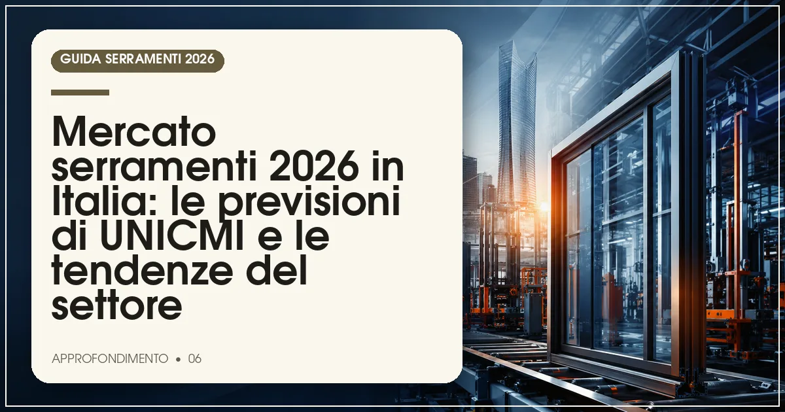

Nel 2026 il mercato italiano dei serramenti si muove, secondo le stime degli analisti e le previsioni di UNICMI, su uno scenario di stabilizzazione con segnali di ripresa: la domanda è trainata dalla riqualificazione energetica e dalla detrazione del 50%, con il PVC materiale più diffuso e l'alluminio in crescita nei grandi formati.
In sintesi
- Il mercato 2026 si stabilizza dopo gli anni dei superbonus, con la riqualificazione come motore principale.
- Le previsioni di UNICMI indicano una domanda sostenuta da bonus edilizi e direttiva Case Green.
- PVC confermato materiale più venduto; alluminio in crescita su scorrevoli e grandi vetrate.
- La nuova costruzione resta debole: pesa il calo dei permessi residenziali.
- Crescono servizio, posa qualificata e consulenza come leve competitive dei rivenditori.

Il mercato italiano dei serramenti attraversa nel 2026 una fase di transizione. Archiviata l'era dei superbonus che aveva drogato i volumi tra il 2020 e il 2023, e superato l'assestamento dei due anni successivi, il comparto cerca un nuovo punto di equilibrio: meno picchi, più continuità, con la sostituzione per efficienza energetica saldamente al centro della domanda. È il quadro che emerge dalle analisi degli osservatori di settore e dalle indicazioni di UNICMI, l'associazione di Confindustria che rappresenta i produttori di serramenti, involucro e chiusure tecniche.
Va detto con chiarezza metodologica: i numeri che circolano a metà anno sono stime e previsioni, non consuntivi. In questo articolo li presentiamo come tali, senza attribuirli a rapporti specifici: le cifre ufficiali di consuntivo vengono diffuse periodicamente da UNICMI e dai centri studi di comparto.
Come sta andando il mercato italiano dei serramenti nel 2026?
Secondo le stime degli analisti di settore, il mercato italiano dei serramenti si muove nel 2026 su un valore complessivo dell'ordine di alcuni miliardi di euro, con volumi nell'ordine di diversi milioni di unità vendute all'anno. La fotografia a metà anno mostra una domanda interna sostenuta prevalentemente dalla sostituzione — finestre, porte-finestre e schermature su edifici esistenti — mentre il contributo della nuova costruzione residenziale resta contenuto, coerente con l'andamento debole dei permessi di costruire registrato negli ultimi anni.
La composizione della domanda premia i prodotti a maggior valore aggiunto: triplo vetro, profili performanti, schermature integrate e soluzioni per l'involucro continuo. In altre parole, il mercato cresce più in valore che in volume, con un mix che si sposta verso il medio-alto di gamma.
Cosa dicono le previsioni di UNICMI e degli analisti per il 2026?
Le previsioni formulate da UNICMI e dagli osservatori economici del comparto per l'anno in corso indicano uno scenario di sostanziale stabilità con segnali di ripresa nella seconda parte dell'anno. Tre i fattori che sorreggono le attese: la conferma della detrazione del 50% per la sostituzione dei serramenti, il recepimento della direttiva europea Case Green che orienta le politiche di riqualificazione del patrimonio, e la progressiva normalizzazione dei costi delle materie prime rispetto ai picchi del biennio 2021-2023.
Restano, sul fronte opposto, alcuni elementi di incertezza segnalati dagli operatori: il costo ancora elevato dei mutui che frena le compravendite immobiliari (e quindi le ristrutturazioni collegate al cambio di proprietà), la carenza di manodopera qualificata nella posa e la concorrenza di prezzo sui prodotti di fascia bassa.
PVC, alluminio e legno: come si muovono i tre materiali?
La ripartizione per materiale, secondo le stime degli operatori, conferma la leadership del PVC nella sostituzione residenziale, con l'alluminio che guadagna terreno nei formati grandi e nel terziario, e il legno e il legno-alluminio solidi nel segmento premium. La tabella sintetizza il quadro indicativo emerso dalle analisi di settore.
| Materiale | Posizionamento | Tendenza 2026 | Driver principali |
|---|---|---|---|
| PVC | Materiale più diffuso nella sostituzione | Stabile, mix verso l'alto | Rapporto prezzo/prestazioni, bonus, triplo vetro |
| Alluminio | Grandi vetrate, scorrevoli, terziario | In crescita | Design minimale, taglio termico evoluto, contract |
| Legno e legno-alluminio | Segmento premium e ristrutturazioni di pregio | Stabile | Estetica, sostenibilità, centri storici |
| Schermature e chiusure tecniche | Complemento dell'involucro | In crescita | Requisiti estivi, direttiva Case Green |
Nota metodologica: il quadro è ricostruito da indicazioni e stime degli operatori di settore raccolte dalla redazione; non costituisce dato ufficiale di consuntivo.
Quali fattori spingono la domanda di sostituzione serramenti?
- Gli incentivi fiscali: la detrazione del 50% con massimale di 60.000 euro mantiene alta la convenienza della sostituzione, come spieghiamo nella nostra guida al bonus.
- I costi energetici: bollette strutturalmente più care rispetto al decennio scorso rendono misurabile il ritorno dell'investimento in finestre performanti.
- La normativa europea: la direttiva Case Green fissa obiettivi di decarbonizzazione del parco edilizio che si tradurranno in domanda strutturale di riqualificazione.
- I requisiti tecnici più stringenti: l'aggiornamento dei limiti di trasmittanza termica spinge verso prodotti a più alto contenuto prestazionale.
- Il comfort abitativo: isolamento acustico e controllo del surriscaldamento estivo sono entrati stabilmente tra i criteri di scelta.
Come cambia il canale distributivo e il ruolo dei professionisti?
Il 2026 conferma l'evoluzione del rivenditore da semplice venditore a consulente d'involucro: rilievo laser, progetto di posa, gestione delle pratiche fiscali e assistenza post-vendita sono diventati parte integrante dell'offerta. Cresce il peso delle reti organizzate — showroom monomarca e gruppi di acquisto — e si consolida la figura del posatore qualificato, la cui scarsità è segnalata dagli operatori come uno dei principali colli di bottiglia del comparto. Anche per questo la certificazione della posa secondo la norma UNI 11673 sta diventando un argomento commerciale oltre che tecnico.
Sul fronte dei produttori, la concentrazione prosegue: i grandi gruppi investono in verticalizzazione della filiera e servizi digitali, mentre le migliori realtà artigiane si difendono su personalizzazione e rapporto diretto. Per orientarsi tra i marchi, il punto di partenza resta la nostra guida ai 10 migliori marchi di serramenti del 2026.
Cosa aspettarsi dalla seconda parte dell'anno?
Gli analisti interpellati dalla redazione indicano per il secondo semestre 2026 una domanda ancora sorretta dagli incentivi, con un possibile ulteriore spostamento del mix verso soluzioni integrate — serramento più schermatura più controllo solare — e un'attenzione crescente ai listini, il cui andamento analizziamo nell'approfondimento sui prezzi dei serramenti nel 2026. Gli appuntamenti fieristici dell'autunno, dal MADE Expo al SAIE, saranno il primo banco di prova per misurare il clima reale del comparto: il calendario completo è nel nostro articolo sulle fiere dei serramenti del 2026.
Domande frequenti sul mercato dei serramenti 2026
Quanto vale il mercato italiano dei serramenti nel 2026?
Secondo le stime degli analisti di settore, il mercato italiano dei serramenti si muove nel 2026 su un valore complessivo dell'ordine di alcuni miliardi di euro, con milioni di unità vendute all'anno. Si tratta di stime di comparto: i dati ufficiali vengono diffusi periodicamente da UNICMI e dai centri studi.
Il bonus serramenti 2026 sostiene la domanda di infissi?
Sì, secondo le analisi di settore la detrazione del 50% resta uno dei principali motori della domanda di sostituzione serramenti nel 2026, insieme alla riqualificazione energetica del patrimonio edilizio esistente e al recepimento della direttiva europea Case Green.
Qual è il materiale più venduto per i serramenti in Italia?
Secondo le stime degli operatori, il PVC è il materiale più diffuso nei serramenti venduti in Italia, seguito dall'alluminio, in crescita grazie a scorrevoli e grandi vetrate, e dal legno e dal legno-alluminio, forti nel segmento premium e nelle ristrutturazioni di pregio.
Cosa prevede UNICMI per la seconda parte del 2026?
Le previsioni formulate da UNICMI e dagli osservatori di settore per la seconda parte del 2026 indicano uno scenario di sostanziale stabilità con segnali di ripresa, trainata dalla riqualificazione energetica e dagli incentivi, a fronte di una nuova costruzione ancora debole.
Fonti e riferimenti ufficiali
Le informazioni di questo articolo fanno riferimento alla documentazione ufficiale degli enti competenti. Verifica sempre gli aggiornamenti sulle fonti primarie prima di prendere decisioni.